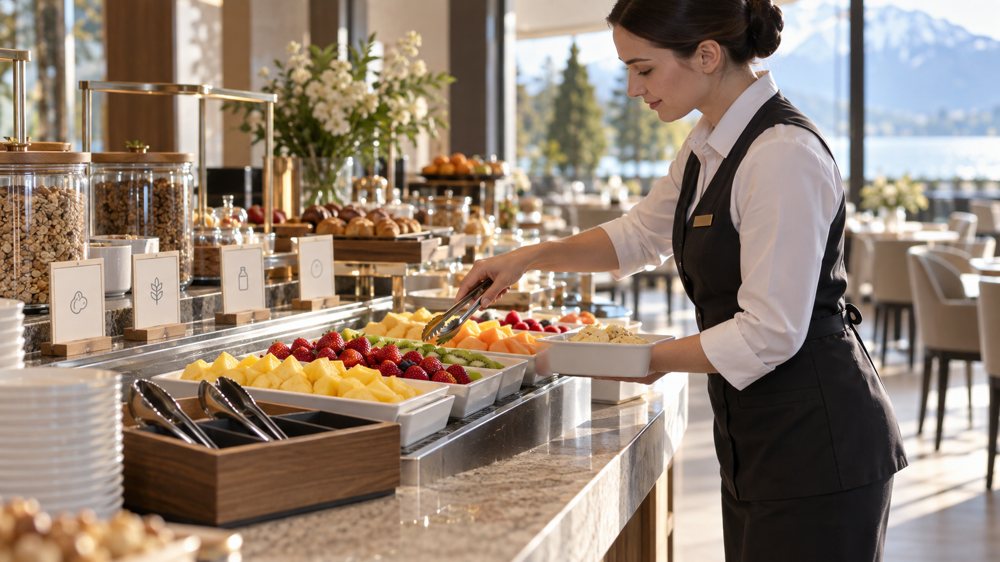

CONSUL TEAM · SEPTEMBRE 2026
Prévenir.
Décider.
Agir avec preuve.
Un parcours ancré dans les séquences d’un hôtel : buffet, chambre, circulation, maintenance et coordination.
En séance
Un repère clair, un visuel métier et une décision à prendre en équipe.
Sur le terrain
Des cas Adonis, fiches réflexes et preuves à adapter aux documents du site.
Après la séance
Des approfondissements, sources et vidéos séparés de l’essentiel pédagogique.
LE PARCOURS
Trois modules, trois environnements.
Un design éditorial vivant et des gestes qui restent dans leur périmètre.
HACCP · BPH · PMS
Maîtriser le flux alimentaire, du fournisseur au buffet.
Explorer le module →Référent HSE en hôtellerie
Les cinq axes du programme, appliqués au travail réel.
Explorer le module →H0/B0 · Non-électriciens
Reconnaître le risque, respecter sa mission et obtenir le relais compétent.
Explorer le module →
MÉDIAS ET DÉCISIONS
Voir la situation.
Nommer le risque.
Choisir l’action.
Les visuels ne décorent pas le cours : ils soutiennent une question, un atelier ou une fiche terrain.
Parcourir la vidéothèque →prêtes à imprimer05cas Adonis
à animer en groupe30questions distinctes
trois banques
Les limites restent visibles.
HACCP 7 h : formation adaptée à l’activité, distincte du dispositif spécifique 14 h. H0/B0 : opérations non électriques ; formation et évaluation ne délivrent pas l’habilitation.
Le cœur pédagogique fonctionne hors connexion après extraction du dossier. Les médias et sources externes nécessitent Internet. Les exercices sont des modèles pédagogiques, à adapter aux documents réels du site.